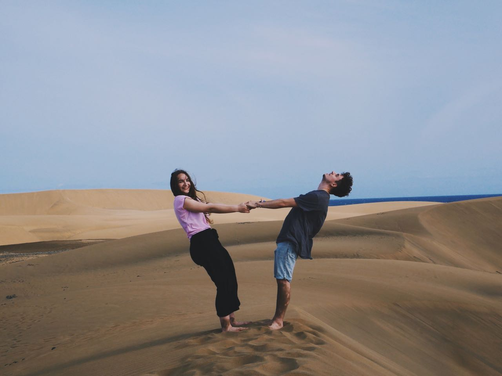

Moin Moin Leudde
Hallo.
Willkommen
auf
meiner
H O M E P A G E



H O B B I E S
(including but not limited to)
B I O
F A Q
F : Du bist 23?! Bist du sitzengeblieben?
A: Nope, aber dass ich mein Abi erst mit 20 gemacht habe hat zwei Gründe:
Ich war auf einer Gesamtschule mit G9
ich war zwischen Kindergarten und Grundschule 1 Jahr in der Vorschule, was quasi ein Mix aus de beiden ist.
Durch G9 hatte ich Zeit in der 11. Klasse ein Jahr in Neuseeland zu leben (vor dem großen Ansturm), was mir so sehr gefallen hat, dass ich nach dem Abi nochmal Work & Traveln gegangen bin, erst in Spanien und Italien und dann in Kanada und den USA
A: Nope, aber dass ich mein Abi erst mit 20 gemacht habe hat zwei Gründe:
Durch G9 hatte ich Zeit in der 11. Klasse ein Jahr in Neuseeland zu leben (vor dem großen Ansturm), was mir so sehr gefallen hat, dass ich nach dem Abi nochmal Work & Traveln gegangen bin, erst in Spanien und Italien und dann in Kanada und den USA
F A Q
F : Wieso Medieninformatik?
A: Als ich Ende 2018 wieder in DE war, habe ich mich umgeschaut und überlegt, was ich wirklich machen will während ich nebenbei gejobt habe.
Vieles kam mir in den Sinn, zB Philosophie, Psychologie und Musik. Durch den Rat meines Bruders kam ich auf Informatik, was mir bis dahin sehr fremd war. Ich belegte ein paar Online-Kurse und guckte mir ein paar TED Talks an.
Mir gefiel die schier grenzenlosen Möglichkeiten (abgesehen von dem Halteproblem) und die Mischung von Strategie und Kreativität. Allerdings schien mir reine Informatik zu trocken, da ich mit Sicherheit kein Geek bin und nachts von dem perfekten Sortieralgorithmus träume.
Medieninfo gefiel mir da vorallem, weil es die Aspekte und Konzepte von Informatik mit spannenden kreativen Multimediabereichen kombiniert.
A: Als ich Ende 2018 wieder in DE war, habe ich mich umgeschaut und überlegt, was ich wirklich machen will während ich nebenbei gejobt habe.
Vieles kam mir in den Sinn, zB Philosophie, Psychologie und Musik. Durch den Rat meines Bruders kam ich auf Informatik, was mir bis dahin sehr fremd war. Ich belegte ein paar Online-Kurse und guckte mir ein paar TED Talks an.
Mir gefiel die schier grenzenlosen Möglichkeiten (abgesehen von dem Halteproblem) und die Mischung von Strategie und Kreativität. Allerdings schien mir reine Informatik zu trocken, da ich mit Sicherheit kein Geek bin und nachts von dem perfekten Sortieralgorithmus träume.
Medieninfo gefiel mir da vorallem, weil es die Aspekte und Konzepte von Informatik mit spannenden kreativen Multimediabereichen kombiniert.
F A Q
F : Wieso Leipzig?
A: Weil für mich die Stadt, einen großen Lebensqualitätaspekt darstellt, war mir die Wahl des richtigen Studienortes besonders wichtig.
Während ich vor dem Studium unter der Woche gearbeitet habe, habe ich viele Wochenendtrips unternommen und mir verschiedene Städte angeschaut und dort für zwei Tage gecouchsurft.
Dabei, war alles dabei Norden, Süden, Westen, Osten. Unter anderem Hamburg, Berlin, Regensburg, Augsburg, Köln, Furtwangen, Hannover, Bremen, etc.
Jedoch hatte es mir am meisten einfach L-City angetan. Für mich hat es die perfekte Größe, da ich Berlin zB zu groß und "fremd" fand und Regensburg zu klein.
Ich liebe das allgemeine Flair, was über Leipzig ist, dieses Hier-Passiert-Was Gefühl.
Ich habe noch nie so freundliche und offene Menschen, wie hier getroffen.
Als ich nach dem Umzug öfters mal Möbel über Ebay Kleinanzeigen gekauft hatte und es mit der Tram transportiert hatte, war ich gerührt, wie viele Menschen mir ohne Frage meinerseits einfach zur Hilfe kamen und teilweise die Möbel mit mir bis zu meiner Haustür getragen haben.
Seitdem habe ich einfach sehr viel Liebe für diese Stadt und kann es kaum erwarten, diese Pandemie vorbei ist und ich meine Freunde wieder treffen und neue coole Leute kennenlernen kann.
A: Weil für mich die Stadt, einen großen Lebensqualitätaspekt darstellt, war mir die Wahl des richtigen Studienortes besonders wichtig.
Während ich vor dem Studium unter der Woche gearbeitet habe, habe ich viele Wochenendtrips unternommen und mir verschiedene Städte angeschaut und dort für zwei Tage gecouchsurft.
Dabei, war alles dabei Norden, Süden, Westen, Osten. Unter anderem Hamburg, Berlin, Regensburg, Augsburg, Köln, Furtwangen, Hannover, Bremen, etc.
Jedoch hatte es mir am meisten einfach L-City angetan. Für mich hat es die perfekte Größe, da ich Berlin zB zu groß und "fremd" fand und Regensburg zu klein.
Ich liebe das allgemeine Flair, was über Leipzig ist, dieses Hier-Passiert-Was Gefühl.
Ich habe noch nie so freundliche und offene Menschen, wie hier getroffen.
Als ich nach dem Umzug öfters mal Möbel über Ebay Kleinanzeigen gekauft hatte und es mit der Tram transportiert hatte, war ich gerührt, wie viele Menschen mir ohne Frage meinerseits einfach zur Hilfe kamen und teilweise die Möbel mit mir bis zu meiner Haustür getragen haben.
Seitdem habe ich einfach sehr viel Liebe für diese Stadt und kann es kaum erwarten, diese Pandemie vorbei ist und ich meine Freunde wieder treffen und neue coole Leute kennenlernen kann.